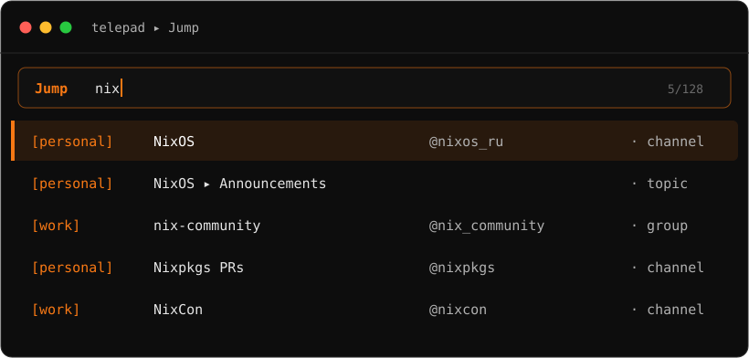

Any Telegram chat, two keystrokes away
A rofi quick-switcher for Telegram Desktop (and forks like AyuGram). Hit a global hotkey from any window, fuzzy-type a few letters, and it jumps straight to that chat, group, channel, contact or forum topic — across all your accounts. It's Discord's Ctrl-K, reimagined for the desktop.
local cache, every account
hit Enter
in-place over D-Bus
Features
One flat, fuzzy list across every account — with the ranking, folders and topics that make it faster than the client itself.
Chats, groups, channels and contacts from all your accounts in a single fuzzy list — even contacts you have no open chat with.
Your most-used chats float to the top automatically — visit count with a 30-day recency half-life.
Every forum topic is its own searchable row, so you jump straight to a topic on the first keystroke.
Each Telegram folder shows as a 📁 Folder ▸ row that expands into that folder's chats.
Open the archive folder view, or jump straight to a specific archived chat.
A guaranteed Saved Messages row per account, ranked like any other jump target.
Match a peer by display name or its public @username — whichever you remember.
sync --avatars shows profile photos as row icons. Opt-in — plain sync stays a clean text list.
Vanilla Telegram Desktop by default, or AyuGram / another TDesktop fork via one client line.
Configurable focuser + key-injector — i3, sway, hyprland; X11 or Wayland (xdotool / ydotool).
Your session and chat list live on disk. No server, no cloud, no telemetry — just MTProto and D-Bus.
Bind telepad to a key in your WM and trigger it from your editor, terminal, browser — anything.

Install
A single static Rust binary. You'll need rofi and an app api_id / api_hash from my.telegram.org.
git clone https://github.com/antlis/telepad
cd telepad && cargo install --path .
# ~/.config/telepad/config.toml → api creds + accounts
telepad login personal # interactive, one per account
telepad sync # cache your chats
# then bind `telepad` to a hotkey in your WMcargo install --git https://github.com/antlis/telepad
# (crates.io release coming: cargo install telepad)telepad = pkgs.rustPlatform.buildRustPackage {
pname = "telepad";
version = "0.10.0";
src = pkgs.fetchFromGitHub {
owner = "antlis"; repo = "telepad";
rev = "v0.10.0"; hash = "…";
};
cargoHash = "…";
};Cross-account switching drives the client's own account-switch shortcut with a real keypress (the tg://…&acc= deep-link crashes AyuGram). That needs a focuser + key-injector — defaults i3-msg + xdotool, overridable for any WM. See Configuration in the README.
Usage
Three commands and a handful of config keys — bind telepad to a hotkey and forget the rest.
Commands
telepad menutelepad login <acct>telepad sync [acct|all]telepad sync --avatarsConfig keys · config.toml
clienttelegram (default) or ayugram — sets the D-Bus name & window classfocus_cmd{class}) — i3 / sway / hyprctlinject_cmd{key}) — xdotool / ydotooldbus_serviceaccounts[].switch_keyalt+1 — empty = same-account only